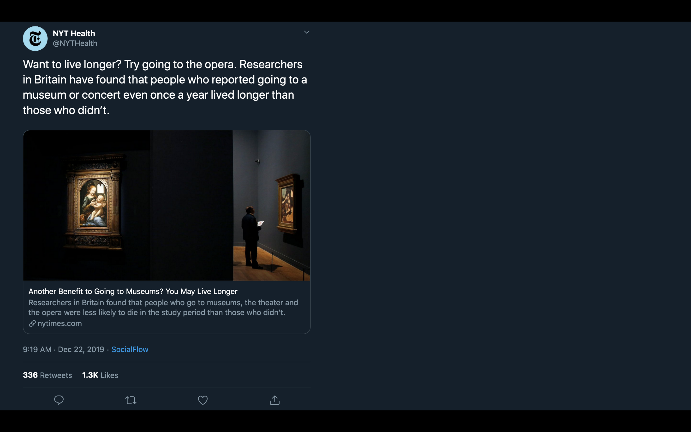
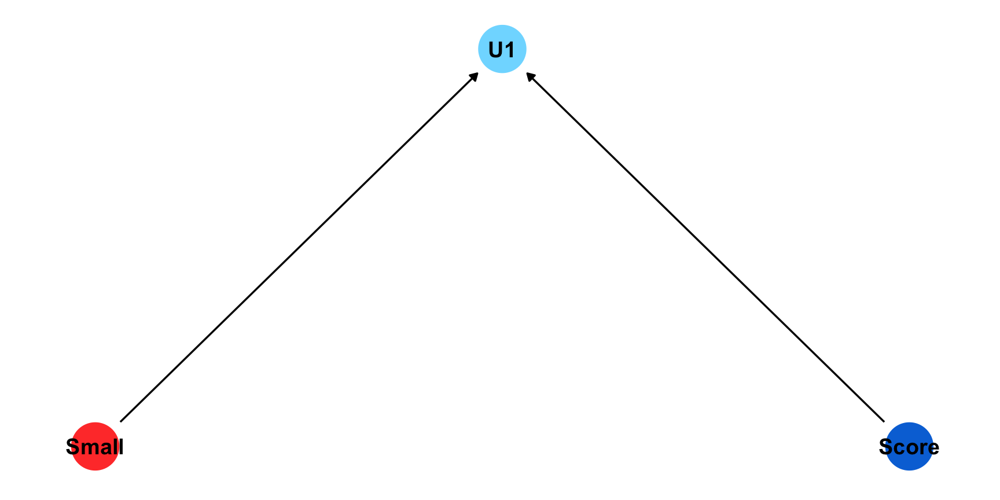
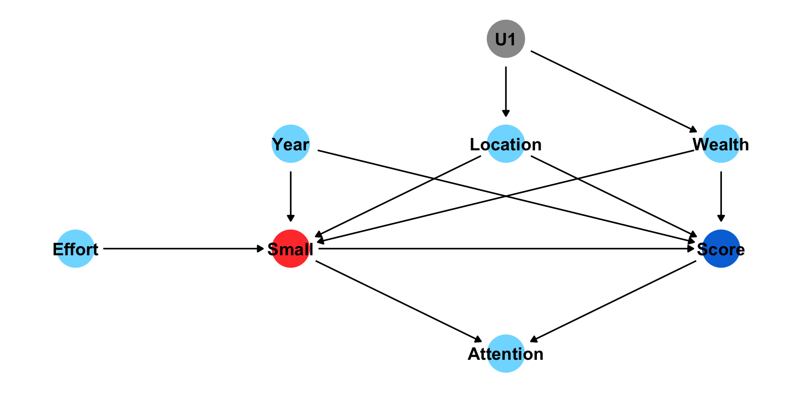
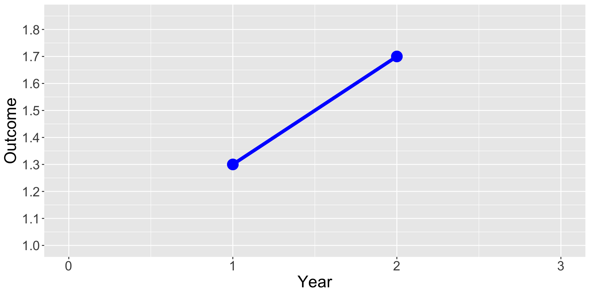
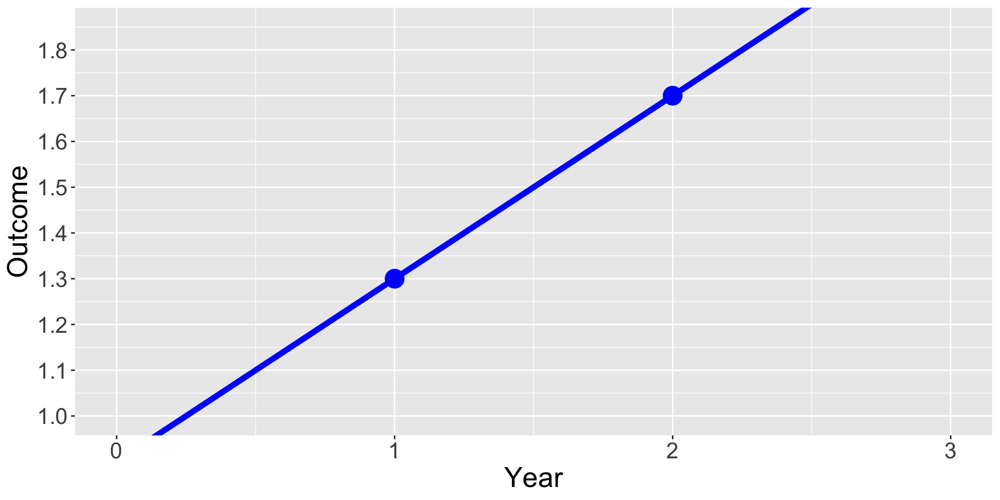
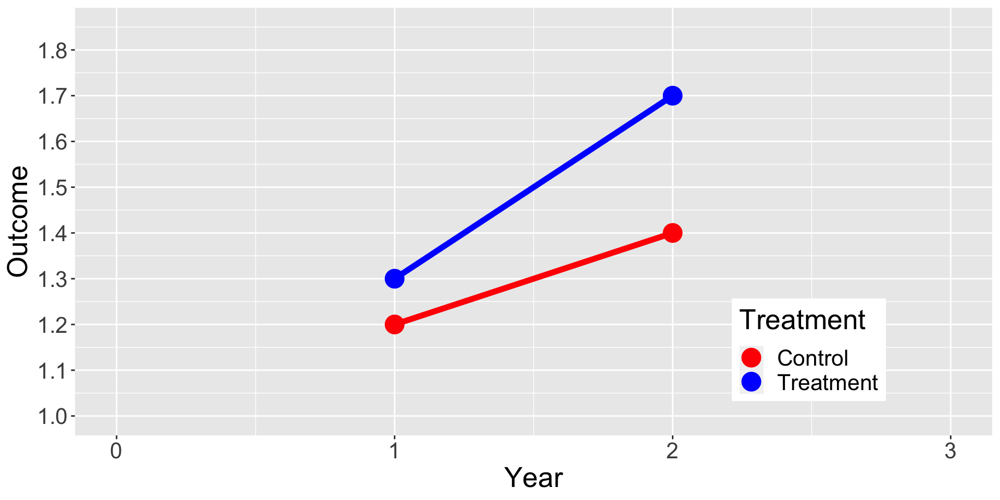
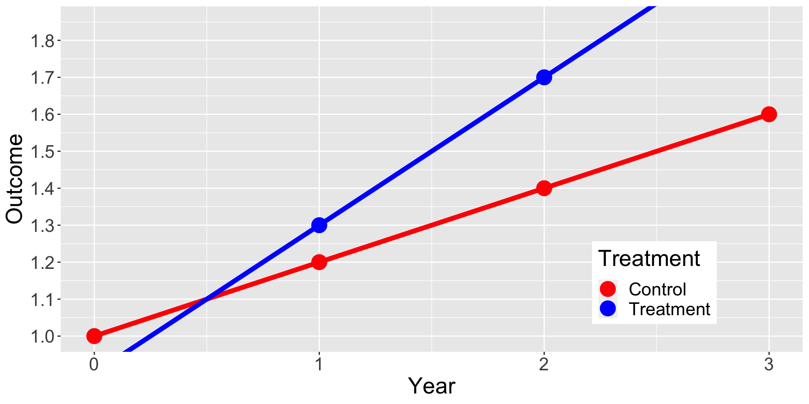
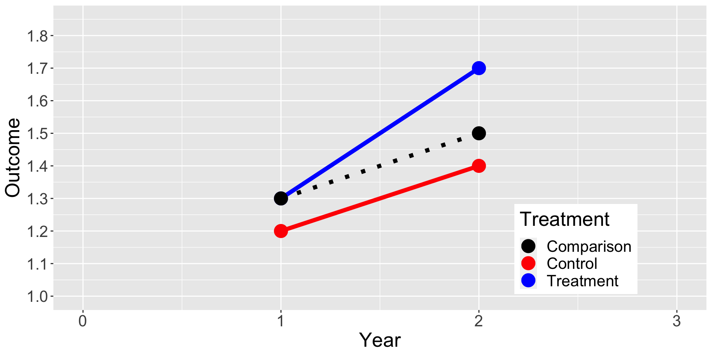

Causal Inference 1
Digging Deeper
Logistics
Assignments
- If you didn’t post your git handle on Slack, please do
- Next week:
- Readings
- Install Quarto and create an empty pdf
- I’ll put some helpful resources on next week’s page
Agenda
- How to follow-along with the slides
- Estimating Causal Effects with Randomized Experiments
- RCTs in International Development
- Economists as Plumbers
Estimating Causal Effects with Randomized Experiments
How do we think about causality?
Potential Outcomes
\[ Y_i = \begin{cases} Y_i(1) & \text{if } D_i = 1 \text{ (treatment group)} \\ Y_i(0) & \text{if } D_i = 0 \text{ (control group)} \end{cases} \]
Treatment Effect for individual \(i\)
\[ TE_i = Y_i(1) - Y_i(0) \]
What’s the problem?
Fundamental Problem of Causal Inference
- We only observe any given unit in one treatment status at any one time so we can never directly observe the causal effect of a treatment on an individual unit
What’s the solution?
Counterfactuals
- Individuals in the control group serve as a stand-in for the counter-factual of the treatment group
\[ \widehat{ATE} = \overline{Y}_{treatment\_group} - \overline{Y}_{control\_group} \]
What’s complicated about this?
- “Only valid when when the treatment and control group are comparable with respect to all the variables that might affect the outcome other than the treatment variable itself.”
- “We must find or create a situation in which the treated observations and the untreated observations are similar with respect to all the variables that might affect the outcome”
- “By randomly assigning treatment, we ensure that treatment and control groups are, on average, identical to each other in all observed and unobserved pre-treatment characteristics”
Can’t we just observe and compare?


Can’t we just observe and compare?

Can’t we just observe and compare?
Example: What is the effect of class size on test scores
Can’t we just observe and compare?

Can’t we just observe and compare?

Can’t we just observe and compare?

Can’t we just observe and compare?

Can’t we just observe and compare?

Can’t we just observe and compare?

Can’t we just observe and compare?

Why can’t we just observe how units change over time?
Show code
library(ggplot2)
Year = c(0,1,2,3)
Outcome = c(NA, 1.3, 1.7,NA)
Treatment = c("Control", "Control","Control","Control")
dat = data.frame(Year, Outcome, Treatment)
ggplot(data = dat, aes(x = Year, y = Outcome, group = Treatment, color = Treatment)) +
geom_line(aes(linetype=Treatment),size=2) +
geom_point(size = 6) +
scale_linetype_manual(values=c("solid")) +
xlim(0,3) +
scale_y_continuous(limits = c(1,1.85), breaks = seq(1, 1.85, by = .1)) +
scale_color_manual(values = c("blue") ) +
theme(legend.position = "none", text = element_text(size=20)) 
Why can’t we just observe how units change over time?
Show code
Year = c(0,1,2,3)
Outcome = c(0.9, 1.3, 1.7, 2.1)
Treatment = c("Control", "Control","Control","Control")
dat = data.frame(Year, Outcome, Treatment)
ggplot(data = dat, aes(x = Year, y = Outcome, group = Treatment, color = Treatment)) +
geom_line(aes(linetype=Treatment),size=2) +
geom_point(size = 6) +
xlim(0,3) +
scale_y_continuous(breaks = seq(1, 1.85, by = .1)) +
scale_linetype_manual(values=c("solid", "solid")) +
scale_color_manual(values = c("blue") ) +
coord_cartesian(ylim = c(1, 1.85), clip = "on") +
theme(legend.position = "none", text = element_text(size=20))
Why can’t we just compare units without randomization?
Show code
Year = c(0,1,2,3)
Outcome = c(NA, 1.2, 1.4, NA,
NA, 1.3, 1.7, NA)
Treatment = c("Control", "Control","Control","Control",
"Treatment", "Treatment", "Treatment", "Treatment")
dat = data.frame(Year, Outcome, Treatment)
ggplot(data = dat, aes(x = Year, y = Outcome, group = Treatment, color = Treatment)) +
geom_line(aes(linetype=Treatment),size=2) +
geom_point(size = 6) +
xlim(0,3) +
scale_y_continuous(limits = c(1,1.85), breaks = seq(1, 1.85, by = .1)) +
scale_linetype_manual(values=c("solid", "solid")) +
scale_color_manual(values = c("red", "blue") ) +
theme(legend.position = c(0.8, 0.2), text = element_text(size=20))
Why can’t we just compare units without randomization?
Show code
Year = c(0,1,2,3)
Outcome = c(1, 1.2, 1.4, 1.6,
0.9, 1.3, 1.7, 2.1)
Treatment = c("Control", "Control","Control","Control",
"Treatment", "Treatment", "Treatment", "Treatment")
dat = data.frame(Year, Outcome, Treatment)
ggplot(data = dat, aes(x = Year, y = Outcome, group = Treatment, color = Treatment)) +
geom_line(aes(linetype=Treatment),size=2) +
geom_point(size = 6) +
xlim(0,3) +
scale_y_continuous(breaks = seq(1, 1.85, by = .1)) +
scale_linetype_manual(values=c("solid", "solid")) +
scale_color_manual(values = c("red", "blue") ) +
coord_cartesian(ylim = c(1, 1.85), clip = "on") +
theme(legend.position = c(0.8, 0.2), text = element_text(size=20))
Why can’t we just compare units without randomization?
Show code
Year = c(0,1,2,3)
Outcome = c(NA, 1.2, 1.4, NA,
NA, 1.3, 1.7, NA,
NA, 1.3, 1.5, NA)
Treatment = c("Control", "Control","Control","Control",
"Treatment", "Treatment", "Treatment", "Treatment",
"Comparison","Comparison","Comparison","Comparison")
dat = data.frame(Year, Outcome, Treatment)
ggplot(data = dat, aes(x = Year, y = Outcome, group = Treatment, color = Treatment)) +
geom_line(aes(linetype=Treatment),size=2) +
geom_point(size = 6) +
xlim(0,3) +
scale_y_continuous(limits = c(1,1.85), breaks = seq(1, 1.85, by = .1)) +
scale_linetype_manual(values=c("dotted", "solid", "solid")) +
scale_color_manual(values = c("black", "red", "blue") ) +
theme(legend.position = c(0.8, 0.2), text = element_text(size=20))
Dealing with Small Sample Sizes
- Re-randomization
- Blocking
- Non-bipartite matching
- These fancy methods only ensure balance on observed characteristics
Counterpoint
RCTs in International Development
Impact Evaluations vs M&E
Traditional M&E focuses on implementation and outputs
- Did the intervention deliver the outputs that were planned?
- Ex. Number of NGOs that attended a training
Impact Evaluations focuses on theory of change and outcomes
- Did the intervention lead to measurable changes in the desired outcomes?
- Ex. Did the training lead NGOs to pursue new sources of funding?
Impact Evaluations vs M&E
- To answer the question: Did the training lead NGOs to pursue new sources of funding?
- We need to estimate the counterfactual: What sources of funding would have been pursued by NGOs without the intervention?
Impact Evaluations vs M&E
Randomization Reduces Risk of Systematic Bias
- If we don’t have a comparison group, we don’t know how NGOs would have changed without the intervention
- If we purposely select which NGOs receive the intervention, they may be systematically different and improving more quickly before the intervention
- If we randomly select NGOs to receive the intervention, it is statistically most likely that they would have been similar without the intervention
IEs in International Development

Economists as Plumbers
History of Experiments
- Study of scurvy (Lind, 1747)
- Lemons
- Education and cognitive psychology in 1880s
- teaching techniques, sensual perceptions
- Agriculture, medicine, econ, political science in the 1920s
- fertilizer, radiation, indifference curves, voter registration
- Policy and program evaluation in the 1960s
- 245 social policy RCTs in the US by 1978
- Mexico’s PROGRESSA in 1997 (first large-scale policy RCT)
Credibility Revolution
- “Let’s Take the Con out of Econometrics” (Leamer, 2019)
- Minimum Wages and Employment: A Case Study of the Fast-Food Industry in New Jersey and Pennsylvania (Card & Kreuger, 1994)
- Identification and Estimation of Local Average Treatment Effects (Imbens and Angrist, 1994)
- 2019 Nobel Prize in Economics (Banerjee, Duflo, and Kremer)
- 2021 Nobel Prize in Economics (Imbens and Angrist)
Why Plumbers?
Three categories of economists:
- Scientists
- Engineers
- Plumbers
“Scientists design general frames, engineers turn them into relevant machinery, and plumbers finally make them work in a complicated, messy policy environment.”
Duflo’s Example
Example of water connections:
- Big picture: people really need water
- Details: they won’t navigate bureaucracy
- Design of the tap: details about communication or defaults
- Layout of the pipes: logistics of authority and responsibility
Big Picture + Details
Why focus on details?
- Policymakers don’t have time to focus on details
- Details make all of the difference
- “It turns out that most policymakers, and most bureaucrats, are not very good plumbers.”
Plumbing vs Science
- Economists have the disciplinary training to make good plumbers
- behavioral science, incentives issues, and firm behavior
- understanding of organizations
- equilibrium consequences of apparently small changes
- “Plumbing experiments, since they are primarily motivated by pragmatism, must focus on what is important for the world, not necessarily on the very subtle issues that theorists would find worth discussing.”
Plumbing vs Science
- Scientists can tell us the drivers of human wellfare and prosperity
- But can we manipulate these macro-forces?
- Probably not really.
- So what can we do as social scientists?
- Help at the margins in specific places with specific policies and programs
- Any normatively uncomfortable findings?
Appendix
Communicating Effect Sizes
- Standard deviations
- Percentage change
- Z-scores
- Index measures
Can’t we just observe and compare?